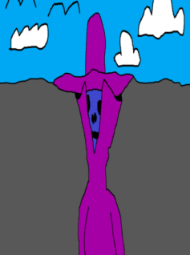

|  |
The Mystery of Mr. EThe Unknown Resident of the American RapCity Mr. Melvin Rodrigo Edwards (or Mr. E for short) is a resident of the fictional city known as the American RapCity. He only appears to come out of his home every day at the same time and when he does, it's to get some food from a diner and perform a rap song for the other customers. Other than that and his full name, almost nothing is known about him and if you head to his mobile home and knock on the door, there will be no answer. |
|
|